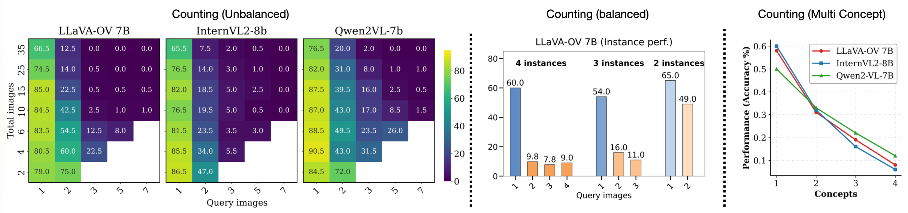
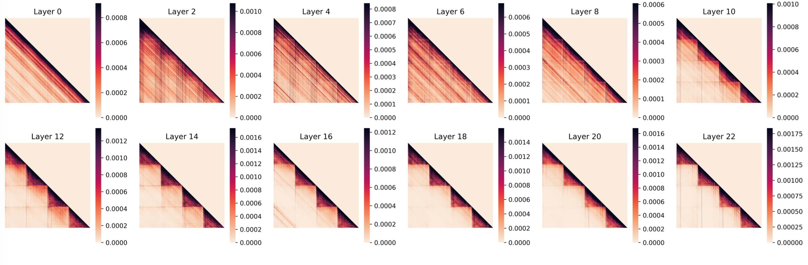
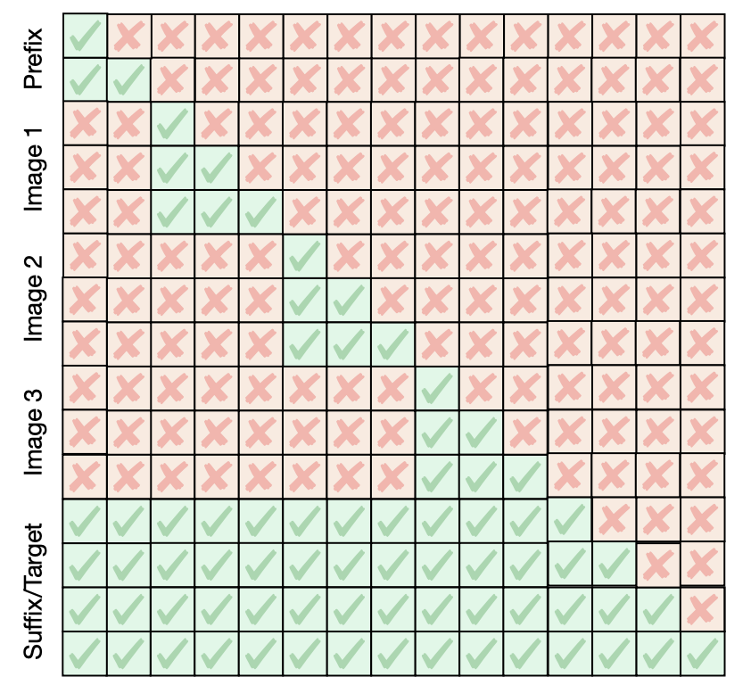
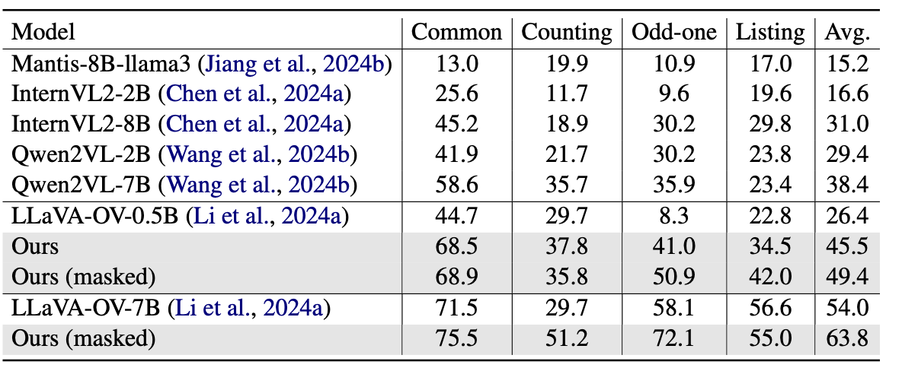
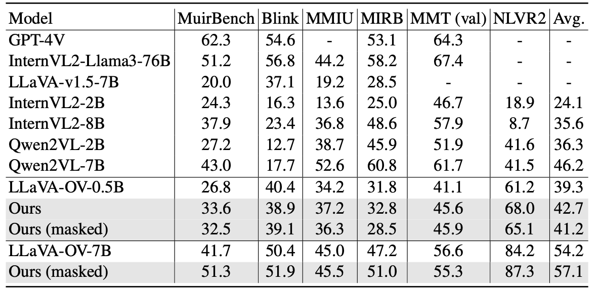
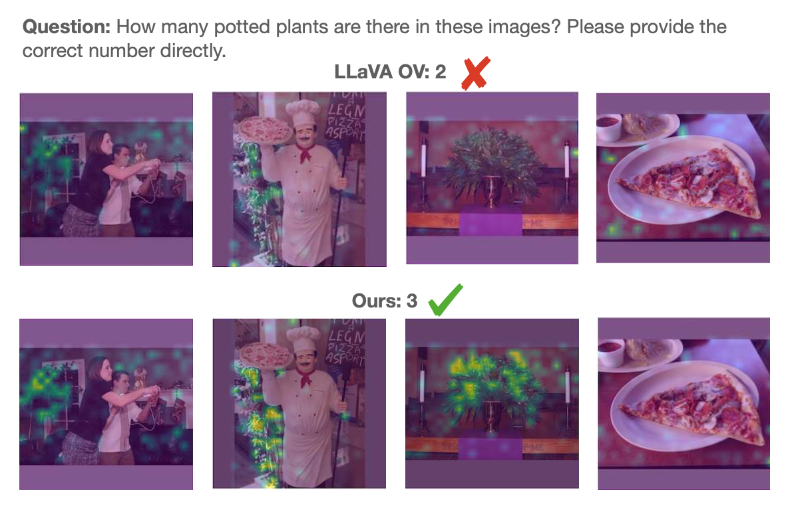

Abstract
Large Vision Language Models (LVLMs) have demonstrated remarkable capabilities, yet their proficiency in understanding and reasoning over multiple images remains largely unexplored. While existing benchmarks have initiated the evaluation of multi-image models, a comprehensive analysis of their core weaknesses and their causes is still lacking. In this work, we introduce MIMIC (Multi-Image Model Insights and Challenges), a new benchmark designed to rigorously evaluate the multi-image capabilities of LVLMs. Using MIMIC, we conduct a series of diagnostic experiments that reveal pervasive issues: LVLMs often fail to aggregate information across images and struggle to track or attend to multiple concepts simultaneously. To address these failures, we propose two novel complementary remedies. On the data side, we present a procedural data-generation strategy that composes single-image annotations into rich, targeted multi-image training examples. On the optimization side, we analyze layer-wise attention patterns and derive an attention-masking scheme tailored for multi-image inputs. Experiments substantially improve cross-image aggregation while also enhancing performance on existing multi-image benchmarks.
Insights
MIMIC is a controlled benchmark designed to study how LVLMs behave when reasoning must happen across multiple images rather than within a single view. Starting from annotated single-image datasets, it procedurally constructs multi-image examples by composing image sets and language queries so that the required evidence can be distributed across images in a controlled and interpretable way.
The benchmark includes four task families, Common, Counting, Odd-One, and Listing, which probe different aspects of multi-image understanding. Across these tasks, MIMIC varies sequence length, information spread, distractor presence, object-instance distribution, and query complexity. This makes it possible to isolate where performance breaks and why, and the findings below summarize the main limitations revealed by the analysis. Using the benchmark, the paper identifies six key findings about current LVLMs’ multi-image failure modes, which are summarized below.
Finding 1: The performance degradation in multi-image scenarios stems primarily from increased sequence length rather than the increased number of images.
Finding 2: Current LVLMs primarily behave as single-image models: performance peaks when the vision-token sequence length matches that produced by one or two images.
Finding 3: Current LVLMs struggle to aggregate information across multiple images.

Figure 1. Counting performance under different settings. Performance consistently drops when object instances are spread across multiple images, and drops even more sharply when the task requires tracking multiple concepts.
Finding 4: Models are sensitive to visual distractors, especially if information is spread out.
Finding 5: LVLMs demonstrate limited capacity for multi-concept tracking, reducing their reliability on complex multi-object queries.
Finding 6: Inter-image attention diminishes in deeper layers of LVLMs, indicating a shift from cross-image integration to intra-image focus.

Figure 2. Inter-image and intra-image attention across layers. Early layers show stronger cross-image interaction, while deeper layers become predominantly intra-image.
Method
The paper proposes two complementary remedies for improving multi-image reasoning. The first is a data-centric strategy that procedurally composes single-image annotations into multi-image training examples, explicitly teaching the model to aggregate evidence across images. The second is an optimization-centric attention-masking scheme derived from the layer-wise attention analysis. Together, these components improve both the supervision signal and the model’s ability to communicate across images.

Figure 3. Masking Strategy for Our Approach.

Table 1. Results on existing multi-image benchmarks including MuirBench, Blink, MMIU, MIRB, MMT, and NLVR2.
Results
The proposed method improves performance both on standard multi-image benchmarks and on MIMIC. These gains show that targeted supervision and better cross-image attention help models move beyond their strong single-image bias and generalize across unseen scenarios.

Table 2. Results on the MIMIC benchmark, with strong gains on Common, Counting, Odd-One, and Listing.

Figure 4. Answer-to-image attention comparison. The baseline misses relevant evidence in one image, while the improved model attends more evenly to the correct object evidence.
Takeaway
MIMIC shows that current LVLMs remain weak multi-image reasoners: they struggle with long sequences, cross-image aggregation, distractors, and multi-concept tracking, while deeper layers drift toward intra-image focus. Targeted multi-image supervision and attention masking directly improve these weaknesses, leading to stronger results on both existing benchmarks and MIMIC.
BibTeX
@article{das2026more,
title = {More Images, More Problems? A Controlled Analysis of VLM Failure Modes},
author = {Das, Anurag and Bulat, Adrian and Baldrati, Alberto and Metaxas, Ioannis Maniadis and Schiele, Bernt and Tzimiropoulos, Georgios and Martinez, Brais},
journal = {arXiv preprint arXiv:2601.07812},
year = {2026}
}